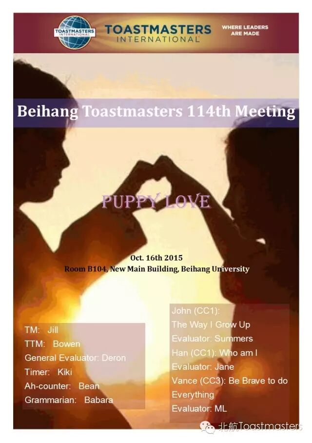
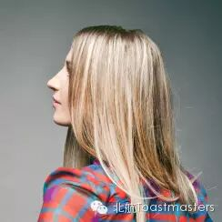
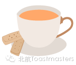
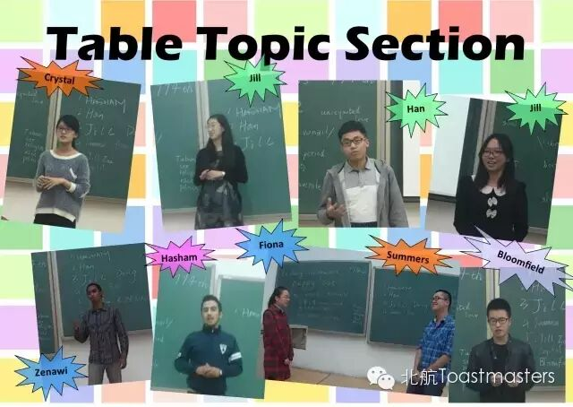
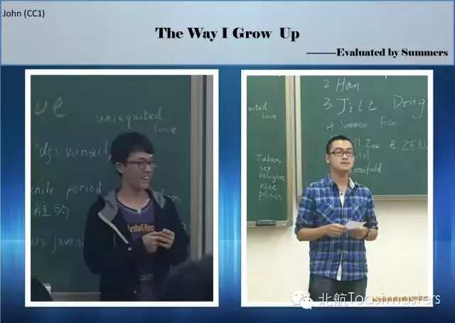
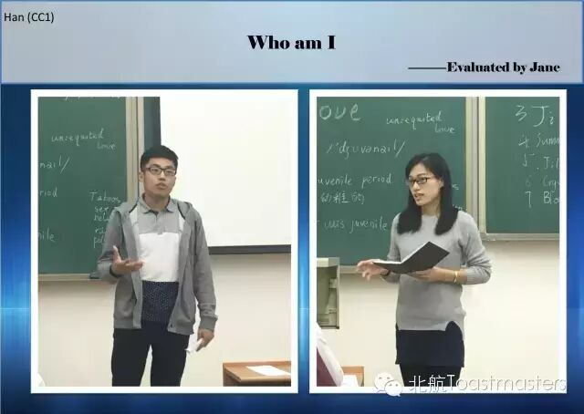
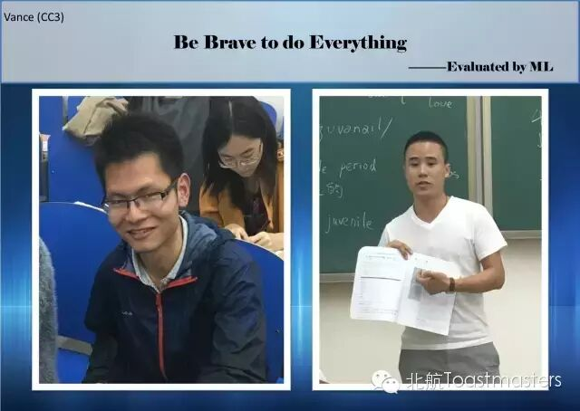
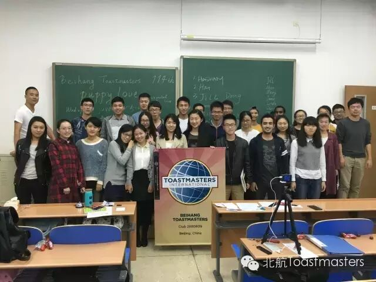

我们的TTM Bowen本着大家开心就好的原则问了第一个上台的歪国友人HASHAM关于他的puppy love，虽然小编确实没听太明白他讲的内容（怪我咯），但看着他甜蜜的笑容我就什么都懂了，真想对我的puppy lover说三个字：“你在哪”<哭>。还记得Han 的问题是对于早恋影响学习的看法，小编听到问题的想法就是：“谁TM说恋爱影响学习的，明明是学习影响恋爱，好不啦”<让我哭一会>。最后，我们的小Summers以甘愿当little three(忽略这个翻译，大家懂就好)却还是被拒的辛酸“故事”（实为情景对话）赢得了大家的同情，最后摘得了Best Table Topic Speaker的桂冠。<鼓掌>

The way I grow up.
快点看过来，John欧巴开讲了，小编还记得那一张双胞胎照片出来的时候，全场女生wow（超可爱有木有），还有sister照片放出来的时候全场男生盯着照片好像能看出微信号的眼神。没办法，基因这个东西很奇妙的。后来讲到大学生活，轮滑、台球、牌还有majiang,wuli John 样样精通呀！最后在知道自己不可能成为爱因斯坦和奥沙利文之后，说“I just want to become myself”,最终Best prepared Speaker 花落到了John 家。棒棒哒


Be brave to do
everything.
